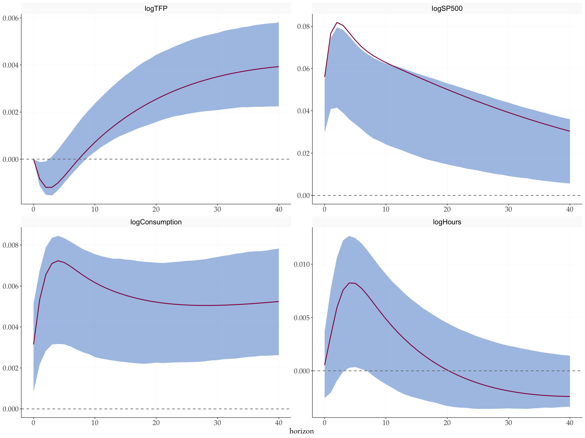
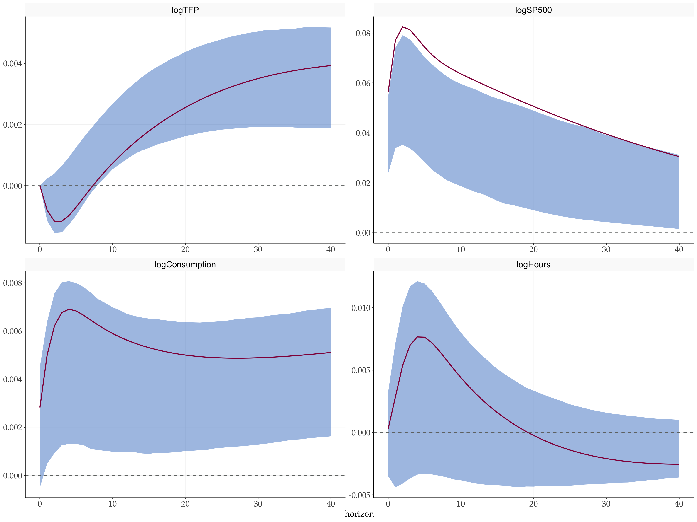

library(tidyverse)
library(tictoc)
library(tidyMacro)
set_theme(fThemeTidyMacro())Mixed restrictions
News-Driven Business Cycles: Insights and Challenges
1 Overview
This document replicates the news shock identification of Beaudry and Portier (2014) . A news shock is identified as the shock that has no contemporaneous effect on TFP but maximizes the long-run response of TFP at a 40-quarter horizon. The approach follows the mixed restriction strategy combining a zero impact restriction with a long-run maximization criterion.
2 Model and Identification
With \(P\) the lower Cholesky factor of \(\Sigma\), any rotation is observationally equivalent:
\[\Sigma = P P' = (P Q)(P Q)', \qquad Q Q' = I_K.\]
The news shock is the rotation vector \(q\) orthogonal to the impact on TFP (variable 1) that maximizes the share of TFP’s forecast error variance up to horizon \(H\):
\[q^{*} = \arg\max_{q\,:\,q'q = 1,\ (Pq)_1 = 0} \frac{\sum_{h=0}^{H} \big[(\Phi_h P q)_1\big]^2}{\sum_{h=0}^{H} \sigma_{11,h}}, \qquad H = 40,\]
where \(\sigma_{11,h}\) is the total forecast error variance of TFP at horizon \(h\). The impact vector is \(b^{news} = P q^{*}\) and structural IRFs are \(\Theta_h = \Phi_h P q^{*}\).
3 Setup
4 Data
data("BeaudryPortier2014")
y <- BeaudryPortier2014 |> as.matrix()
T_obs <- nrow(y)
N <- ncol(y)
varnames <- colnames(y)5 VAR Estimation
p <- 2
c <- 1
var_result <- fVAR(y, p = p, c = c)
Sigma <- var_result$sigma6 News Shock Identification
horizon <- 40
# Wold IRFs by inverting (I - A(L))
wold <- fWoldIRF(var_result, horizon = horizon)
# Lower Cholesky factor of Sigma
S <- t(chol(Sigma))
# LR-Max point estimate
struct_irf <- fMaxIRF(wold, S, var_idx = 1L)7 Bootstrap Confidence Bands
tic()
boot_max <- fBootstrapMaxCorrected(
y = y,
var_result = var_result,
nboot1 = 1000,
nboot2 = 2000,
horizon = horizon,
var_idx = 1, # maximise long-run effect on TFP (variable 1)
cumulate = integer(0), # no cumulation (levels data)
prc = 68 # Match original paper
)
toc()
#> 0.239 sec elapsedfPlotIRFLR(
point = struct_irf,
boot_result = boot_max,
varnames = varnames,
facet_ncol = 2
) + labs(y = NULL)
8 Compare the result to Barsky and Sims (2012)
Now we can compare the results to that of Barsky and Sims (2012) and plot IRF results.
struct_irf_uhlig <- fUhligIRF(wold, S, idx = 1L)
tic()
boot_uhlig <- fBootstrapUhligCorrected(
y = y,
var_result = var_result,
nboot1 = 1000,
nboot2 = 2000,
horizon = horizon,
idx = 1L, # maximise FEV share of TFP (variable 1)
cumulate = integer(0),
prc = 68 # Match original study
)
toc()
#> 0.254 sec elapsedfPlotIRFLR(
point = struct_irf_uhlig,
boot_result = boot_uhlig,
varnames = varnames,
facet_ncol = 2
) + labs(y = NULL)
References
Barsky, Robert B., and Eric R. Sims. 2012. “Information, Animal Spirits, and the Meaning of Innovations in Consumer Confidence.” American Economic Review 102 (4): 1343–77. https://doi.org/10.1257/aer.102.4.1343.
Beaudry, Paul, and Franck Portier. 2014. “News-Driven Business Cycles: Insights and Challenges.” Journal of Economic Literature 52 (4): 993–1074. https://doi.org/10.1257/jel.52.4.993.